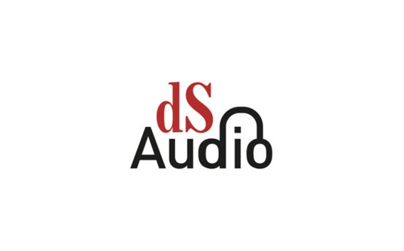
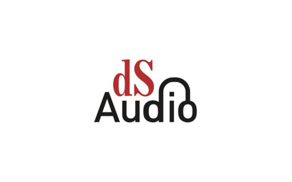

Als voorsmaakje en in afwachting van de podcast kan je al luisteren naar Verder na zelfdoding. 'Het schuldgevoel maakt het zoveel lastiger' (via de kleine QR code.)


Voor algemene vragen over onze podcasts kan je terecht op dsaudio@standaard.be of op kerekewered@gmail.com Wie met vragen zit rond zelfdoding, kan terecht bij de Zelfmoordlijn op het gratis nummer 1813 en op de site zelfmoord1813.be.
Deze podcast kwam tot stand op initiatief met Wouter Vandriessche en met steun van Fonds Pascal Decroos. Deze podcast werd gecreëerd door Brecht Castel. De story production gebeurde door Annelies Vanderoost. De opnames gebeurden door Miguel de Oliveira e Silva, Fien Dillen, en Joris Van Damme. Brecht Plasschaert deed de audio productie. De muziek werd gecreëerd door de broers van Brecht: Stijn en Dieter Castel in samenwerking met Brecht Plasschaert. Nele Eeckhout deed de eindredactie.